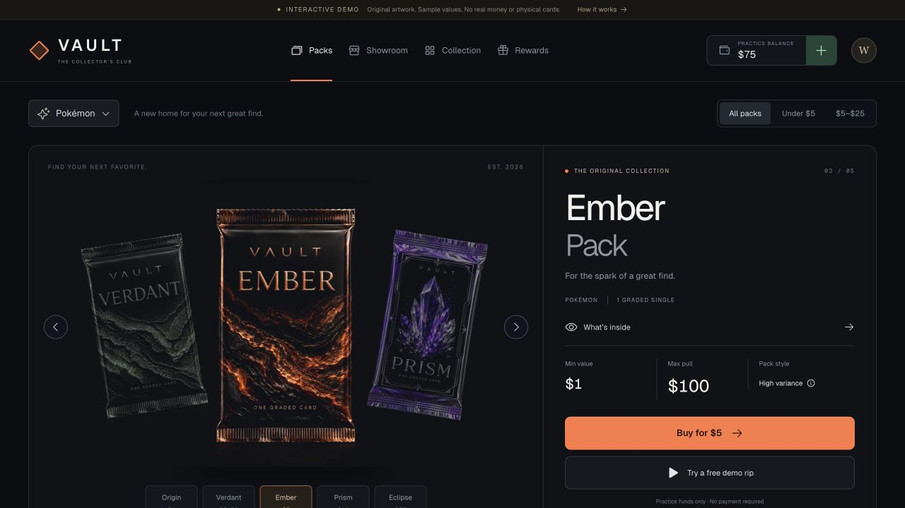

PULLR
A collector experience built around pack discovery, a cinematic card reveal, and a practice wallet.

The idea
A collectible opening should feel exciting while keeping the collection and pricing information easy to understand.
My approach
Design the journey from pack browsing through reveal and collection, backed by card records, account state, and free practice funds.
What exists
A hosted test edition supports pack browsing and opening with practice funds. Real transactions are blocked.
Next steps
Continue usability testing and resolve licensing, graded-price providers, and commercial requirements before any paid product.
Scope & status
Unofficial collector prototype using third-party card imagery. No affiliation, real-money purchases, or physical fulfillment is claimed.
Free practice preview using simulated credits and catalog imagery. No real purchases, payouts, or physical-card ownership are represented.